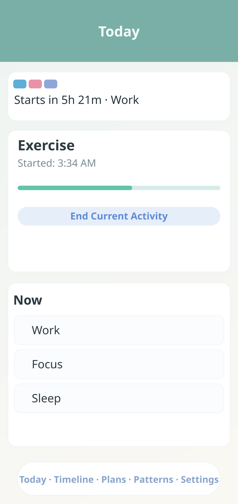
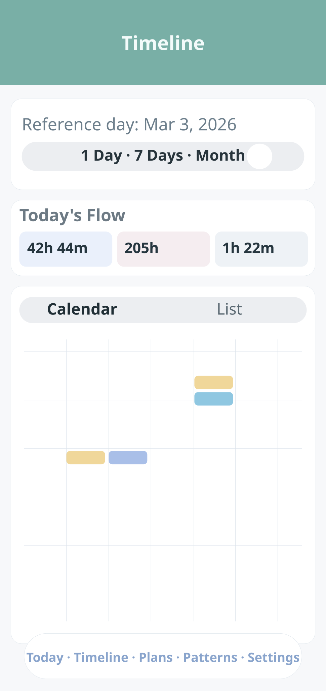
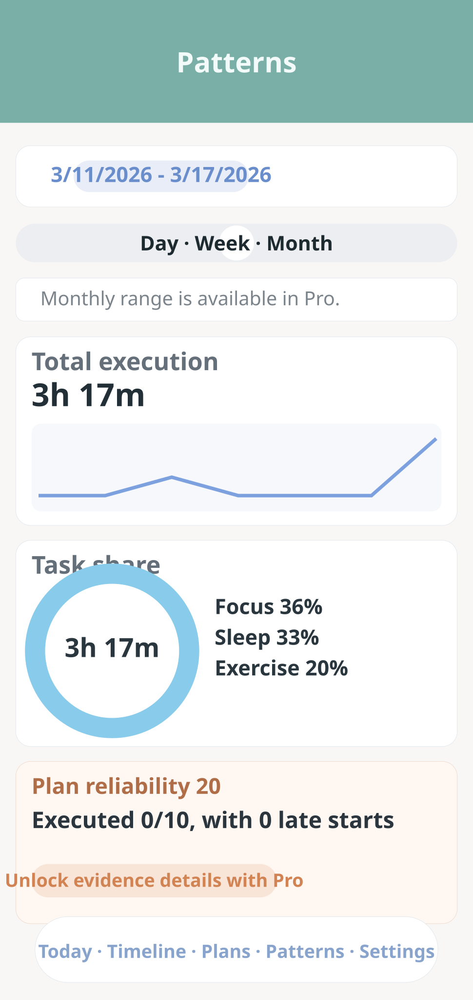
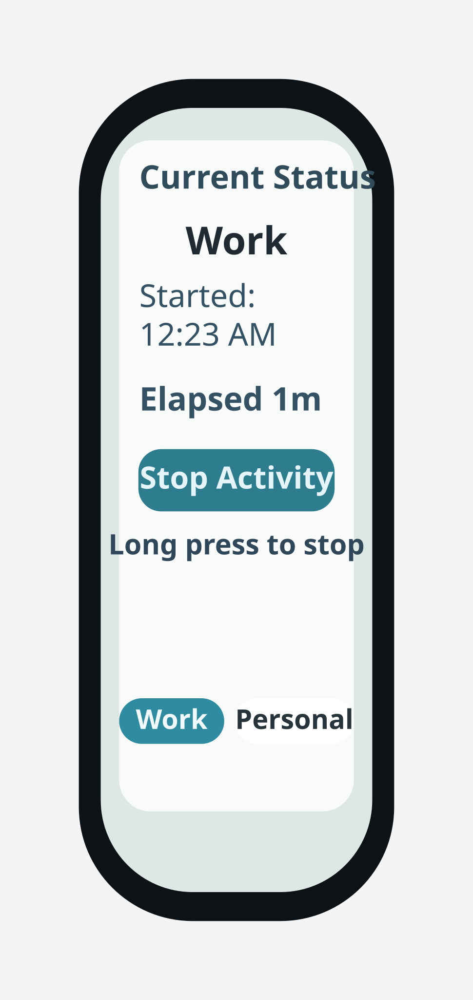

Set simple schedule blocks
Create day or week blocks first. Keep each block realistic so it is easy to follow.
Soothe helps you compare plans with actual execution so your next action feels simple and intentional.
Get troubleshooting steps, contact details, and quick answers.
Review what data is processed, why it is used, and your rights.
Start small, keep your rhythm, and review your day with clear evidence.
Create day or week blocks first. Keep each block realistic so it is easy to follow.
Use quick activity tracking during the day. Small logs are enough to build useful patterns.
Open Timeline to check where plans matched and where time shifted.
Review Patterns to adjust your next day with calmer and more consistent routines.
From daily focus to weekly and monthly reflection, every screen is built to keep your rhythm clear.



